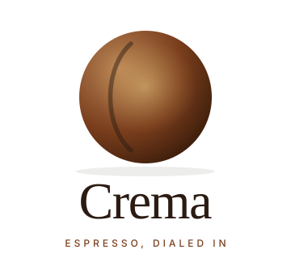
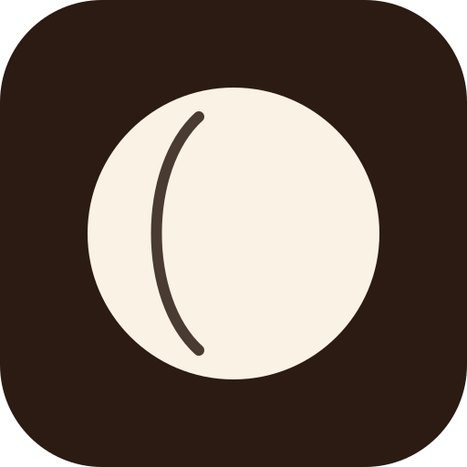
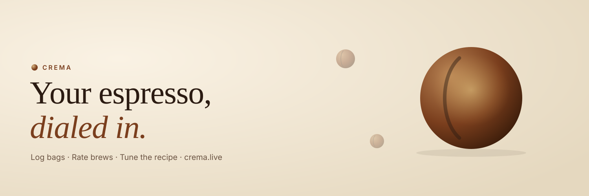
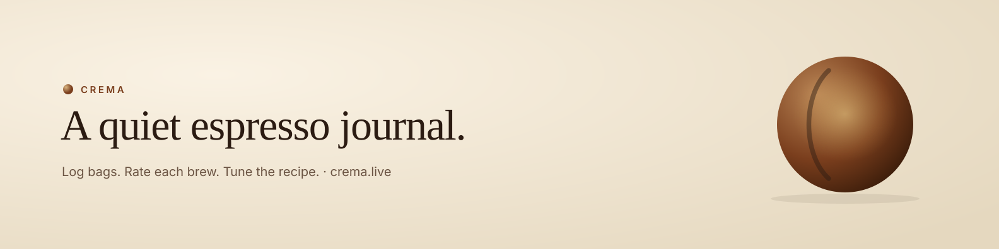
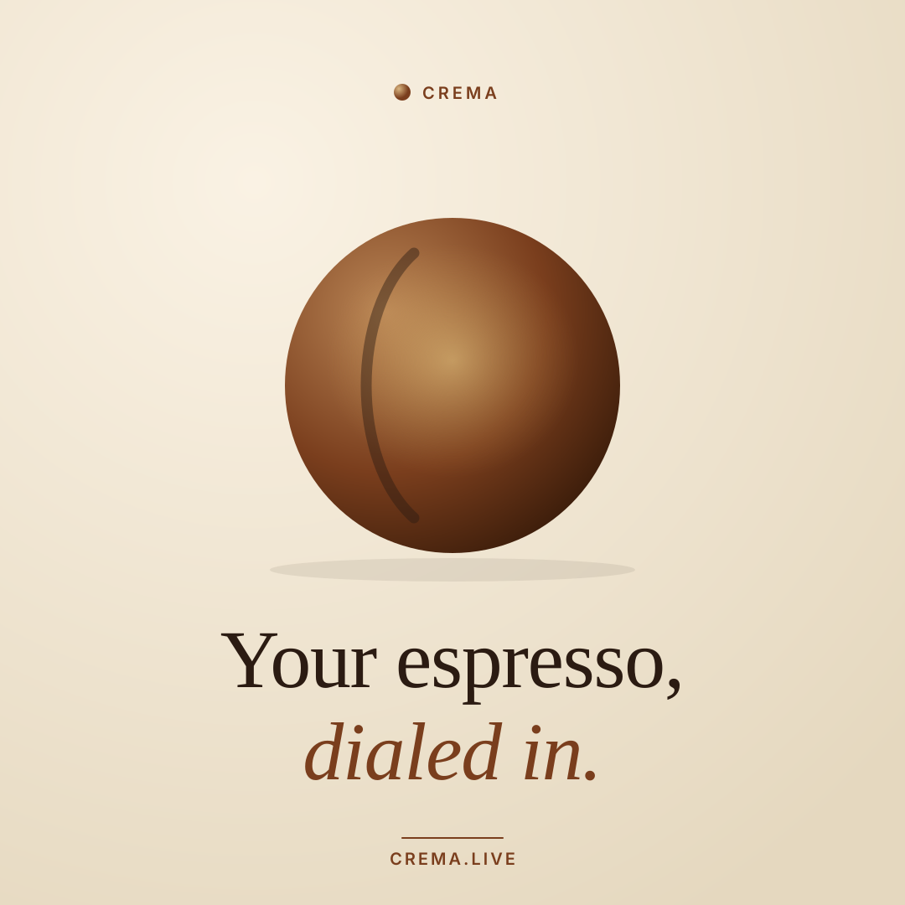
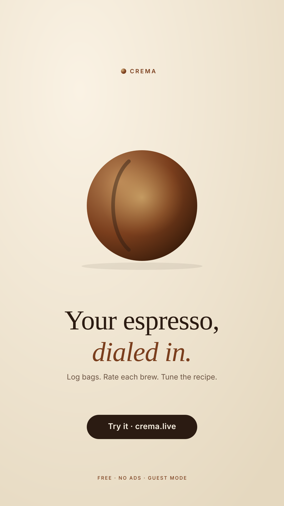
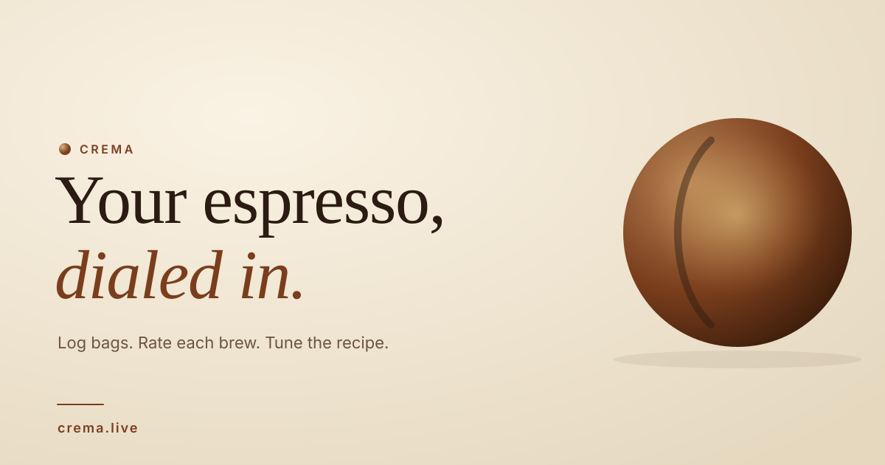

Press Kit
Crema — media & brand assets.
Everything you need to write about, link to, or feature Crema — the espresso journal at crema.live.
One-liner
The primary pitch. Copy-paste.
Primary
Crema is a quiet espresso journal. Log every bag, rate every brew, and watch it learn which grind actually works for you.
30-word pitch
Crema is a free espresso journal for your phone. Snap a bag, OCR fills the details, rate each brew, and Crema suggests the grind that's worked for you on similar roasts.
100-word pitch
Crema is a small, beautifully-opinionated espresso journal. Photograph a new bag and on-device OCR extracts the details. Track each dial-in attempt — dose, yield, time, grind, taste, texture — and rate the drinks you make (espresso, cortado, iced latte, cappuccino, or your own). As your history grows, Crema suggests starting grind settings for new bags based on your own ratings on similar roasts. No app store, no account wall (guest mode keeps everything local), no tracking, no ads. Runs as a PWA, installs to your Home Screen, syncs across devices when you sign in.
Taglines
Use the primary first. Everything else is swap-in.
- PrimaryYour espresso, dialed in.
- AltA quiet espresso journal.
- AltLog the bag. Nail the recipe.
- AltStop re-dialing the same bag twice.
- AltRemember what worked.
Logos
SVG — scale, recolor, embed anywhere. Right-click → Save Image As.
{kind=link}
{kind=link}

{kind=link}
{kind=link}

{kind=link}
Social cards
Drop these straight into Twitter / X, Instagram, LinkedIn.

{kind=link}

{kind=link}

{kind=link}

{kind=link}

{kind=link}
Screenshots
Rendered with the real app's HTML + CSS — pixel-identical to production. Each card has a Download PNG link that renders a 1080 × 1920 PNG on the fly (needs Node + Playwright — see README).
{kind=link}
{kind=link}
{kind=link}
{kind=link}
{kind=link}
To regenerate every PNG at once, run
npm run export-png
from brew/docs/press-kit/.
Product Hunt demo
30-second auto-playing loop at 1920 × 1080. Open, screen-record one full loop, upload to PH. Recording recipe in demo/README.md.
Instagram Reel (30s)
Vertical 9:16 script — visuals, on-screen text, and voiceover. Warm, personal tone. Hook in the first 2 seconds.
| Time | Visual | Text on screen | Voiceover |
|---|---|---|---|
| 0:00–0:02 | Slow-mo espresso pulling into a cup — moody, close-up, no text yet | — | You pulled an incredible shot… |
| 0:02–0:05 | Cut to blank Notes app / crumpled paper on a counter | …and forgot everything. | …and forgot everything about it. |
| 0:05–0:08 | Phone camera over a coffee bag, OCR fields filling in automatically | Snap the bag. | Crema. Snap the bag — it fills itself in. |
| 0:08–0:12 | Bag detail page: roaster name, origin, tasting notes appearing | Origin. Notes. Roaster. | Log every roaster, origin, tasting note. |
| 0:12–0:16 | Dial-in form: dose/yield inputs, grind slider moving, ratio calculating live | Dose. Yield. Grind. | Track dose, yield, grind, shot time. |
| 0:16–0:19 | Rating screen: four drink types, tap stars, grind suggestion appearing | Rate every brew. | Rate every brew. Get grind suggestions back. |
| 0:19–0:24 | Analytics panel scrolling: top picks → cost per shot → taste profile radar | Your coffee journal. | Your best bags. Your cost per shot. Your taste profile. |
| 0:24–0:27 | Taste profile radar chart fills the screen, warm glow | Know your taste. | Finally know what you love — and how to make it again. |
| 0:27–0:30 | Clean cream background — Crema logo centred, URL below | crema.live — free | Crema dot live. Free. |
Key features
The list, lifted for bullet slides.
- Snap & auto-fill — client-side OCR extracts brand, origin, process, roast, weight, altitude, notes.
- Built-in photo editor — 4:5 crop, rotate, enhance. Shelf stays visually consistent.
- Dial-in companion — two-panel form: Parameters (dose, yield, time, ratio, grind) on top, Results (taste, texture) underneath. Every attempt counted on the bag.
- Ratings that teach — Crema suggests starting grind for new bags, weighted by your own 4/5-star pulls on similar roasts.
- Four drinks + custom — espresso, iced americano, iced latte, cappuccino, or your own (cortado, flat white, V60…).
- Share a bag — one tap publishes just the dialed-in recipe + two bag facts. Web Share API on mobile, clipboard fallback elsewhere.
- Financial view — total spent, avg €/shot, bags finished; a cost-per-shot ladder finds your best value (highest rating ÷ cheapest pull).
- Gear catalogue — machines and grinders you actually use, from Breville Bambino to Decent DE1 Pro and Timemore Sculptor 064S.
- Active / Finished shelf — history stays, clutter doesn't.
- A real journal — top picks, 30-day timeline, grinder sweet-spot chart.
- Guest mode — no email, nothing leaves the browser.
- Sync — sign in with Google; guest data merges into your account.
- Export — one-click JSON dump of everything.
- Works offline — service worker precaches the shell so Crema opens with no network.
- Installs like an app — PWA with Home Screen icon, full-screen, survives Safari storage eviction.
- Secure — Postgres row-level security, private photo bucket, no passwords server-side.
- Free & ad-free — optional Buy Me A Coffee is the only money.
Brand palette
The whole thing lives on cream, accented with espresso.
Typefaces: Fraunces (display, 400/500, italic for accents) · Inter (UI, 400/500/600).
Technical profile
- Stack — Vanilla JS, ES modules, no build step. Single CSS file + feature-folder architecture.
- Auth — Google OAuth via Supabase.
- Database — Supabase Postgres with Row-Level Security on every table.
- Storage — Supabase private photo bucket (signed URLs).
- OCR — Tesseract.js, client-side only.
- Host — GitHub Pages + CloudFlare on a custom domain.
- Telemetry — Sentry for crashes. No analytics, no ads.
- Open source — MIT-licensed repo.
Contact
Built by Nour. For quotes, screenshots, interviews, or to flag anything broken.
Press